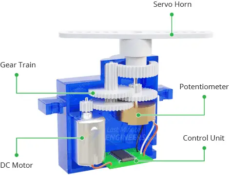
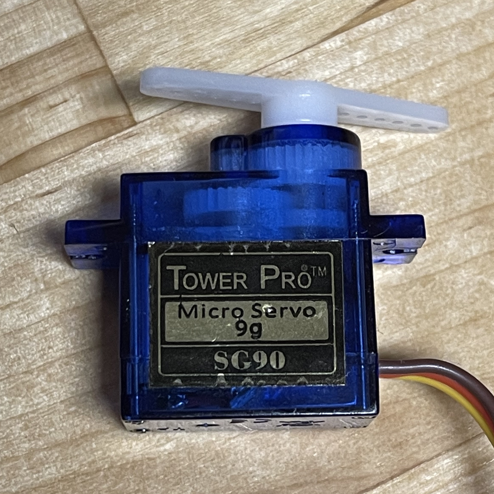
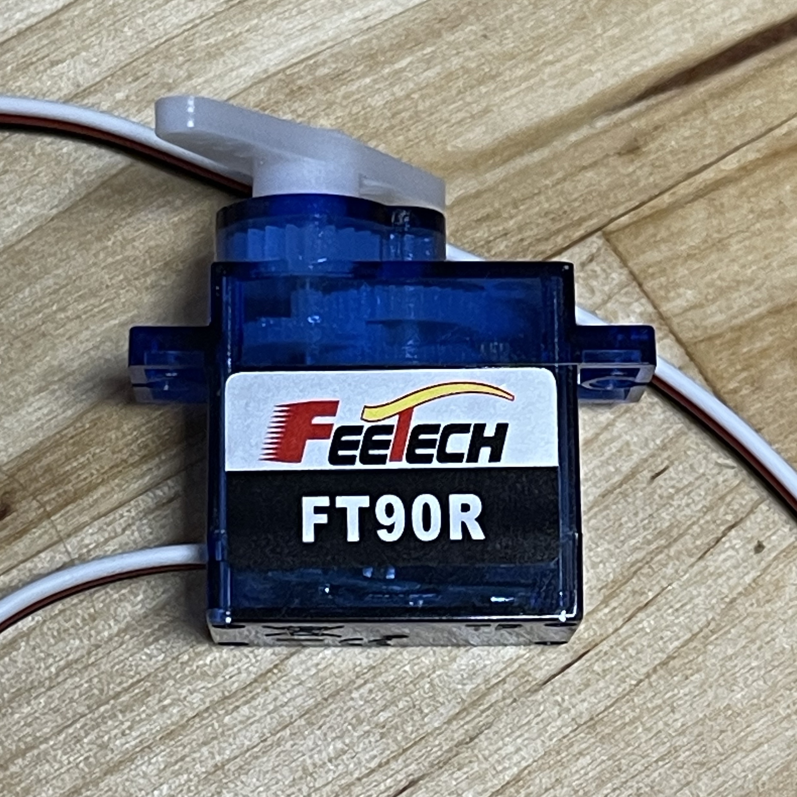
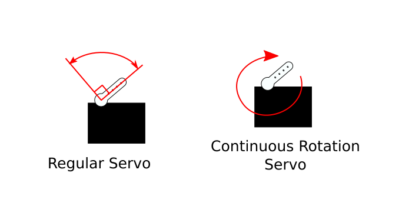
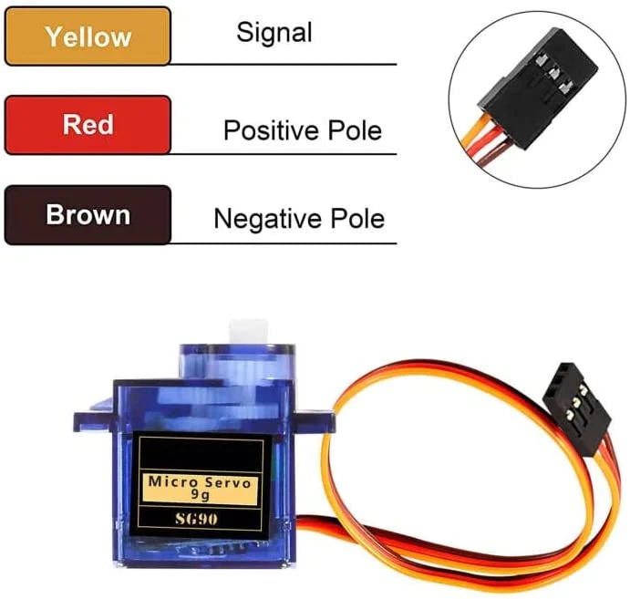
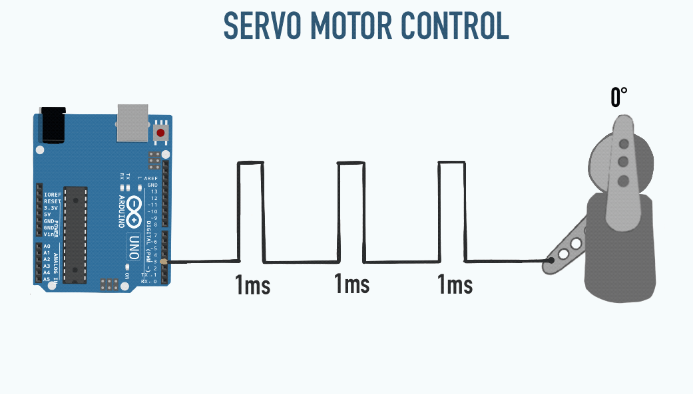

“Servo” refers to the control mechanism of a servo motor. Servo comes from “servus”, the Latin word for slave. The motors get their name from the fact that they can provide more control than a mere DC motor. With this motor, you can control position (rotational angle).
Servo motors actually use a DC motor but with more parts. Inside a servo motor is a mechanism that detects the rotational motion of the DC motor, and with that information it is able to “perform feedback control of motor position”.
The gear assembly is to reduce RPM (rotations per minute) and to increase torque.
Check out this explanation:
Servo motors can operate at high speeds with reliable torque over a wide speed range.
Because of their ability to accurately position, they are used in a variety of applications that require precision and control. One application is to use them as joins for robots.
Servo motors have their own drivers built-in, so you can plug directly to Arduino (depending on the number of servos you want to use).
Not all servo motors are the same. There are different sizes, some use AC motors vs. DC motors, and there are different types of behaviours.
When you google search “Servo Motor” you might get results of a blue rectangular motor like this:

However, pay attention to the label. In this previous photo, it is a Tower Pro SG90.
When moving the shaft carefully by hand, you might notice that it only goes 180 degrees. This type of servo is called a Standard Rotation Servo or Closed Loop. This limited rotation is usually from an internal limiting pin which physically stops the gets from moving any further.
Closed Loop type servo motors provide the most control and most commonly used.
With this motor:

Turning the shaft by hand will result in a full 360 degrees rotation. This is called a Continuous Rotation Servo or Open Loop.
Paying attention to the label is helpful because these motors look very similar.

Also on the label, you will usually find a weight. This is referring to the motor’s torque. For example, the SG90 can apply 9g of force. A bigger servo motor can apply more force, because of the larger gears.
Each motor should come with its own specifications. These are the specs for the standard SG90:
Operating Voltage: 4.8V - 6V
Stall Torque: 1.6 kg-cm
Stall Current: 650 mA
Weight: 9g
Operating Voltage: The voltage range to operate the motor safely. Remember: The higher the voltage applied, the stronger the motor will perform.
Stall Torque: The maximum torque output of the motor when its unable to rotate further.
Stall Current: The maximum current the motor can draw when at stall or maximum load condition (when the shaft can not rotate).
Weight: Knowing the weight could be useful when weight constraints are crucial.
As we have seen with DC motor control and Arduino, you must be careful about how much current the motor will draw from the Arduino, otherwise it could damage the board. Servo motors work directly with the +5V supply rails, but if you are planning to use more than two servo motors, you might want to consider a proper servo shield.

Two of the wires are used for power, and one cable is used to send a PWM signal for control.
As noted above, there is a cable that is meant for PWM signals. The rotation angle is changed depending on the width of a pulse. The motor will hold this position as long as this pulse width is constant.

To control more than one or two servo motors using the Arduino, all you need is this Arduino Library and a good battery / power supply.
From the Arduino website:
Note that servos draw considerable power, so if you need to drive more than one or two, you’ll probably need to power them from a separate supply (i.e. not the 5V pin on your Arduino). Be sure to connect the grounds of the Arduino and external power supply together.
Explore Further:
Youtube: